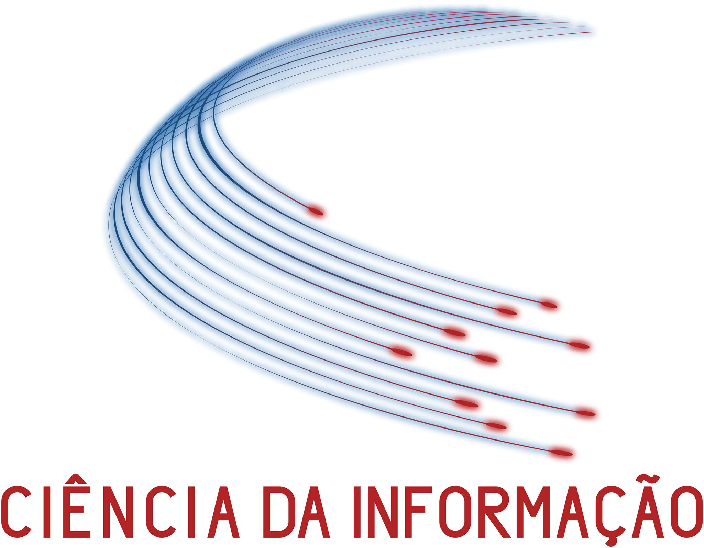

MESTRADO EM CIÊNCIA DA INFORMAÇÃO
O Mestrado em Ciência da Informação (MCI) proporciona uma formação avançada em Ciência da Informação, dirigida a quem pretender seguir uma carreira profissional ou de investigação nesta área. Este mestrado é da responsabilidade conjunta da FEUP e da FLUP e tem os seguintes objetivos: proporcionar uma formação científica sólida, garantindo uma preparação de excelência para o exercício de uma profissão que se consubstancia na capacidade de descobrir, avaliar, organizar, dar acesso e preservar informação, independentemente do seu formato ou suporte, em contextos de utilização diversos; proporcionar uma formação profissional de elevada qualidade com competências técnicas e sociais sólidas no domínio da gestão da informação permitindo: resolver problemas e atuar em contextos multidisciplinares; trabalhar em equipa e em ambientes de colaboração aplicando as suas competências específicas; comunicar eficazmente com públicos especialistas e não-especialistas; e refletir nas responsabilidades sociais e éticas ligadas à aplicação do seu conhecimento; formar para a empregabilidade, ou seja, para o exercício de uma atividade profissional que pode ser desenvolvida no seio das mais diversas organizações, no setor público ou privado, através da criação de relações estreitas com potenciais empregadores, via dissertações, projetos e outras formas de colaboração..
